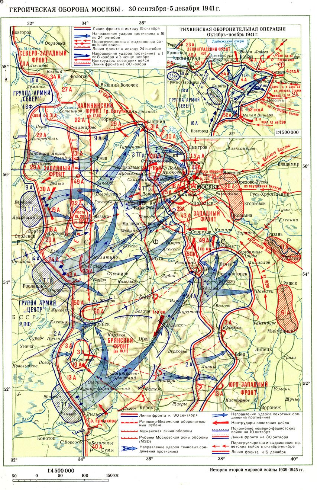
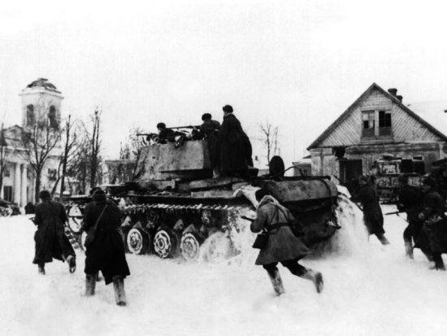
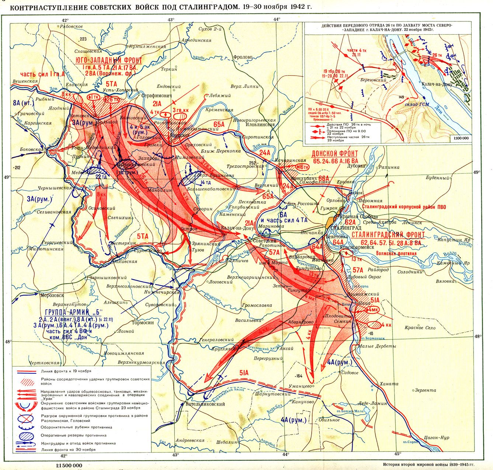
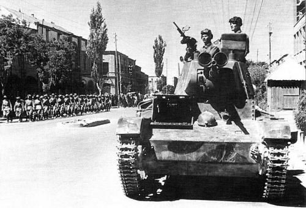

Распределение сил Красной Армии в 1941-1942 годах по ТВД
17 сентября, 10:36

Очень интересная статистика на тему распределения войск РККА по ТВД в критические моменты Великой Отечественной Войны.
Наши войска на Южном и Дальневосточном ТВД в конце 1941 и 1942 гг - сколько сил отвлекалось на них
Взято из Статистических справочников №№ 2 и 5 "Боевой и численный состав вооруженных сил СССР в период Великой Отечественной войны (1941-45 гг.)".
Более известен справочник №1, изданный тиражом 25 экз. и упомянутый Резуном ("Суворовым") в своих опусах. Он у меня тоже есть, но к теме не имеет отношения. Справочники №№2-5 выпущены тиражом по 40 экз., в последнем данные на 20 ноября 1942 г. Выпускал Ин-т военной истории МО РФ, в 1994-95 гг, малый тираж не из-за коварного нежелания чего-либо раскрывать, а лишь из убогости техники и отсутствия средств. Выпуск прекращен из-за переброски сотрудников ин-та на мероприятия по подготовке празднования 50-летия Победы.

Итак, данные на 1 декабря 1941 г. (перед контрнаступлением под Москвой) и на 20 ноября 1942 г. (начало контрнаступления под Сталинградом) - т.е. драматические, переломные моменты войны.
Немцы, в это время, сосредоточили против СССР большинство своих войск - примерно 70% сухопутных, кроме того, задействовали союзников - Финляндию, Италию, Румынию, Венгрию, Словакию, Хорватию, Испанию, формировали ссовские части, использовали "хи-ви".
Как же распределял свои силы СССР? Для удобства я разделил на армию и авиацию, флот не учитывал (кроме морской пехоты и самолетов!)
Кроме действующей армии и войск на Южном и Дальневосточном ТВД были еще войска РГК и расположенные во внутренних военных округах (в основном - подготовка, переформирование и т.п.)
01.12.1941
Армия, всего
10 фронтов, 57 общевойсковых и 8 саперных армий, 314 стрелковых, 84 кавалерийских, 9 танковых и 1 мотострелковая дивизии, 95 стрелковых, 35 воздушно-десантных, 8 морской пехоты, 68 танковых, 2 мотострелковых, 25 саперных, 2 артиллерийских бригады, 22 укрепрайона (примерно 450 расчетных дивизий), много отдельных полков и пр. ( в основном - артиллерийских)
7,7 млн. бойцов, 3,6 млн. ед. стрелкового оружия (кроме пистолетов), 55 тыс. орудий и минометов, 5,9 тыс. танков (в т.ч. 730 тяжелых и средних), 260 тыс. автомашин, 30 тыс. тракторов и тягачей, 1,3 млн. лошадей
Авиация (вкл. самолеты авиации флота!), всего
1 корпусной р-н ПВО, 94 авиационные дивизии, 9 дивизий и див. р-нов ПВО, 3 бригады ПВО, много отдельных авиаполков
700 тыс. бойцов, 9,4 тыс. боевых самолетов (в т.ч. ок. 7,5 тыс. исправных)
Действующая армия
примерно 290 расчетных дивизий (ок. 65%), 3,4 млн. бойцов (ок. 45%), 2,6 млн. ед. стрелкового оружия (бол. 70%), 31 тыс. орудий и минометов (бол. 55%), 2 тыс. танков (ок. 35%, в т.ч. 530 тяжелых и средних - бол. 70%; ), 165 тыс. автомашин (ок. 65%), 13 тыс. тракторов и тягачей (ок. 45%), 600 тыс. лошадей (45%)
ВВС действующей армии (вкл. самолеты действующих флотов!)
62 авиадивизии (ок. 65%), 320 тыс. бойцов (бол. 45%), 4,1 тыс. боевых самолетов (ок. 45%, в т.ч. 2,9 тыс. исправных - ок. 40%)
Сухопутные войска на Южном ТВД (включая войска в Иране) и Дальневосточном ТВД
65 расчетных дивизий (ок. 15%), 1,6 млн. бойцов (ок. 25%), 700 тыс. ед. стрелкового оружия (ок. 20%), 19 тыс. орудий и минометов (ок. 35%), 2,6 тыс. танков (ок. 45%, в т.ч. 30 тяжелых и средних - мен. 5%), 70 тыс. автомашин (бол. 25%), 11 тыс. тракторов и тягачей (бол. 45%), 210 тыс. лошадей (бол. 15%)
Авиация на Южном ТВД (включая войска в Иране) и Далльневосточном ТВД
26 авиадивизий (ок. 30%), 180 тыс. бойцов, 4,1 тыс. боевых самолетов (ок. 45%, в т.ч. 3,5 тыс. исправных - бол. 45%)
Очевидно, что СССР, несмотря на тяжелое положение на Западном ТВД не собирался "оголять" южное и дальневосточное направления. Бросается в глаза более высокая насыщенность техникой войск на недействующих ТВД, хотя, конечно, в основном это была техника старых типов. В целом отвлечение сил на юг и ДВ относительно сравнимо с отвлечением сил Германии на и юге, кроме ситуации с техникой, к-рой СССР оставил там гораздо больше.
20.11.1942

Армия, всего
14 фронтов, 75 общевойсковых и 2 танковых армии, 28 танковых и механизированных корпусов, 410 стрелковых, 31 кавалерийская, 2 танковых и 4 мотострелковых, 37 артиллерийских и зенитно-артиллерийских дивизии, 174 стрелковых, 48 лыжных, 30 воздушно-десантных, 8 морской пехоты, 181 танковая, 27 мотострелковых, 1 мотоциклетная, 51 инженерная и саперная, 1 артиллерийская бригада, 45 укрепрайонов (примерно 670 расчетных дивизий - рост в ПОЛТОРА РАЗА !), много отдельных полков и пр. ( в основном - артиллерийских)
9,1 млн. бойцов, 5,4 млн. ед. стрелкового оружия (кроме пистолетов), 160 тыс. орудий и минометов, 13,8 тыс. танков (в т.ч. 5,2 тыс. тяжелых и средних), 290 тыс. автомашин, 24 тыс. тракторов и тягачей, 1,04 млн. лошадей
Авиация (вкл. самолеты авиации флота!)
1 воздушная армия, 2 армии ПВО, 3 зоны ПВО, 2 корпусных р-на ПВО, 13 авиационных корпусов, 128 авиационные дивизий, 15 див. р-нов ПВО, 12 бригад и бригадных р-нов ПВО, много отдельных авиаполков
970 тыс. бойцов, 19,8 тыс. боевых самолетов (в т.ч. ок. 17,2 тыс. исправных)
Что можно сказать, по сравнению с декабрем 1941 года: боевая мощь вооруженных сил резко возросла, в основном за счет насыщения войск боевой техникой (резко возросла кол-во тяжелых и средних танков, исправных самолетов). Вместе с тем кол-во различных соединений угрожающе выросло (превысив 1000!), что усложняло руководство войсками, мобильность войск не увеличилась
Действующая армия
примерно 520 расчетных дивизий (бол. 75%), 5,8 млн. бойцов (ок. 65%), 3,9 млн. ед. стрелкового оружия (бол. 65%), 115 тыс. орудий и минометов (бол. 70%), 7,6 тыс. танков (бол. 55%, в т.ч. 3,6 тыс. тяжелых и средних - бол. 65%; ), 210 тыс. автомашин (ок. 70%), 14,5 тыс. тракторов и тягачей (ок. 60%), 780 тыс. лошадей (бол. 75%)
ВВС действующей армии (вкл. самолеты действующих флотов!)
91 авиадивизия (ок. 70%), 520 тыс. бойцов (бол. 50%), 8,8 тыс. боевых самолетов (ок. 45%, в т.ч. 7,3 тыс. исправных - ок. 45%)
Возросла абсолютная и относительная (напряжение) численность действующей армии

Сухопутные войска на Южном ТВД (включая войска в Иране) и Дальневосточном ТВД
65 расчетных дивизий (мен. 10%), 1,4 млн. бойцов (бол. 15%), 700 тыс. ед. стрелкового оружия (мен. 15%), 18,8 тыс. орудий и минометов (бол. 10%), 3 тыс. танков (бол. 20%, в т.ч. 160 тяжелых и средних - мен. 5%), 50 тыс. автомашин (мен. 20%), 7,1 тыс. тракторов и тягачей (ок. 30%), 175 тыс. лошадей (бол. 15%)
Авиация на Южном ТВД (включая войска в Иране) и Дальневосточном ТВД
27 авиадивизий (ок. 25%), 165 тыс. бойцов, 4,3 тыс. боевых самолетов (бол. 20%, в т.ч. 3,8 тыс. исправных - бол. 20%)
Абсолютная и относительная численность войск и техники на юге и ДВ уменьшилась, что связано а) с тяжелой обстановкой на фронте; б) стабиабилизацией обстановки на юге и резким снижением угрозы войны на ДВ, однако общая их мощь все равно впечатляет...
http://nosikot.livejournal.com/3420617.html - цинк